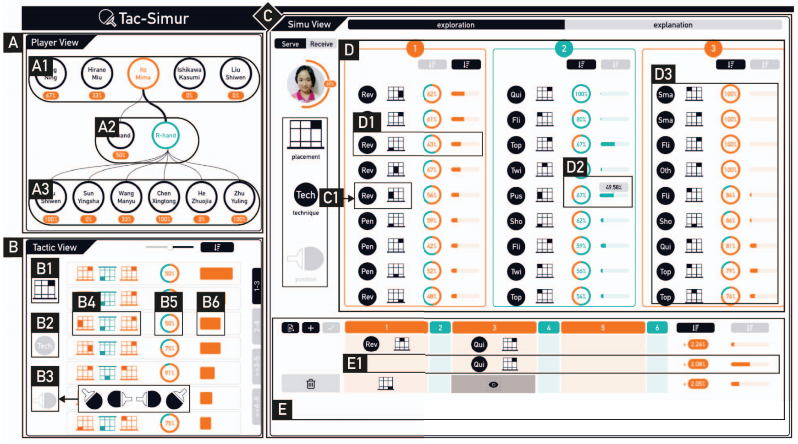
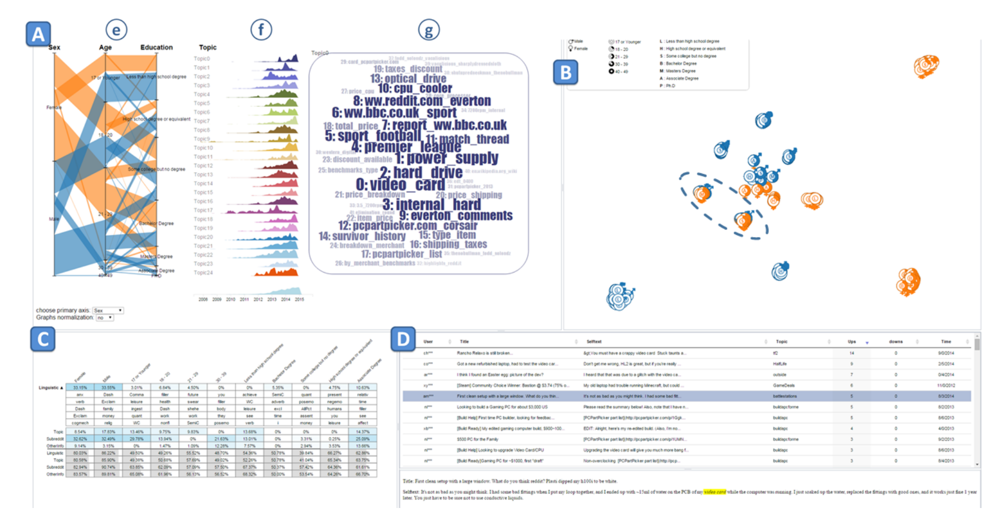
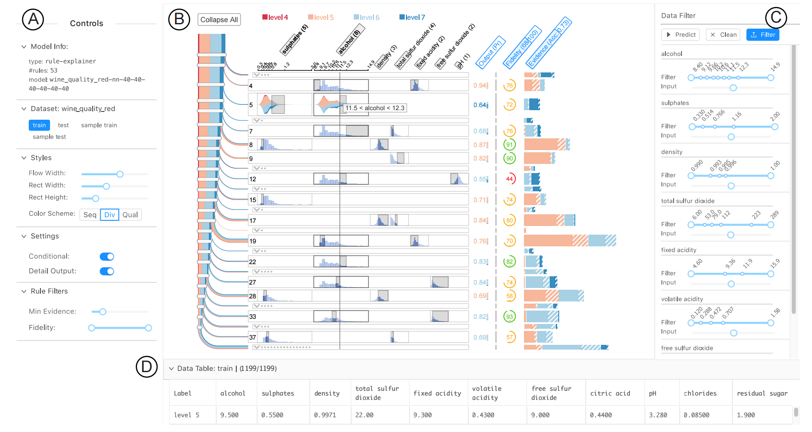
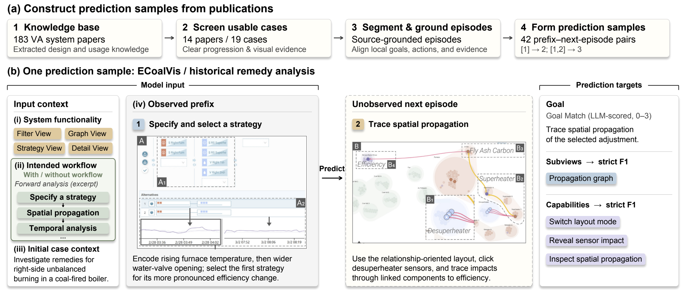

System specification
Views, subviews, capabilities, and coordination describe the interface and the functionality it provides.
VA-Usage
Connecting system functionality, intended workflows, and documented cases to understand how visual analytics supports analytical progress.
Understanding how visual analytics systems are designed and used is important for advancing visual analytics theory. Direct records of system use are difficult to obtain at scale, so we turn to published case studies as a source of documented usage. To examine how system design relates to documented use, we organize system functionality, intended workflows, and reported cases into linked, comparable representations. Extracting these representations requires integrating fine-grained evidence distributed across text, figures, and captions while maintaining consistency across the three layers. We develop a skill-guided agentic framework that encodes knowledge specific to visual analytics in reusable instruction packages, or skills, for evidence interpretation, extraction, review, and revision. We apply the framework to 183 visual analytics system papers from IEEE VIS and VAST to construct a knowledge base of documented usage. Human review of 20 papers indicates high extraction quality, with core system and usage semantics well preserved. An ablation study further demonstrates the effectiveness of the skills specific to visual analytics. Corpus-level comparisons and detailed case analysis show that task needs shape how system functionality is used. Views work together to connect findings to further analysis, while intended workflows are realized differently as questions and evidence develop. We also compare language models' predictions of the next analytic goal and supporting system functionality with and without intended workflows. Providing workflows improves average agreement with documented continuations, although effects vary across cases.
A three-layer representation links system functionality, intended workflows, and documented cases.

Views, subviews, capabilities, and coordination describe the interface and the functionality it provides.
Stages capture local goals, intended activities, and expected outcomes; directed transitions describe how analysis can proceed.
Episodes organize reported analysis by local goal and strategy. Steps link intent, operations, and documented outcomes to system functionality.

Sports analytics
Tac-Simur ↗Explore table-tennis tactics, simulate adjustments, and interpret their effects on match performance.

Social media analytics
DemographicVis ↗Connect demographic groups with topic interests and linguistic features in user-generated content.

Explainable machine learning
RuleMatrix ↗Inspect rule-based explanations to understand, verify, and identify failures in classifiers.
Browse the knowledge base and inspect system interfaces, extracted records, and workflow–case correspondences.

Reusable skills guide an agent to extract, review, and revise linked representations from paper text and figures.

The framework equips a general-purpose agent with visual analytics expertise encoded in reusable skills. From preprocessed passages, captioned figures, and interface crops, it extracts system specifications, intended workflows, and documented cases in sequence. Separate sessions review the three layers jointly and revise supported issues, retaining evidence references and checking structural and cross-layer consistency.
The complete extraction package includes preprocessing artifacts, reusable skills, and the extraction protocol. You can use it directly in your own Codex environment.
Corpus-level comparisons and detailed case analysis reveal how task needs shape functionality use, coordination, and workflow realization.
229 workflows, including opportunities to branch and revisit stages.
471 cases across different reporting settings.
Share of system elements referenced in both intended workflows and documented cases.
How intended workflows inform the next analytic move
Can a system’s intended workflow help a language model anticipate how an analysis proceeds? We compare predictions with and without workflow information, holding system functionality, initial case context, and the observed analysis prefix fixed. The targets are the next local goal and its supporting subviews and capabilities.

Six models predict each sample under both conditions in three rounds, yielding 1,512 predictions. Providing workflows improves average agreement with documented continuations, with substantial variation across samples.
Without → with workflow. Scores average prefixes within cases, cases within papers, then papers, models, and rounds equally. Across 42 samples, mean Capability F1 increases in 25, is unchanged in one, and decreases in 16. The reference is one documented continuation; other useful next moves may differ.
All 42 samples. Without / With indicate intended workflow availability. Values are paper-macro means ± standard deviations across three rounds; Δ is with minus without, calculated before rounding. F1 ranges from 0 to 1.
| Model | Goal Match (0–3) | Subview F1 | Capability F1 | ||||||
|---|---|---|---|---|---|---|---|---|---|
| Without | With | Δ | Without | With | Δ | Without | With | Δ | |
| Qwen3.8-Flash | 2.006 ± 0.066 | 2.012 ± 0.046 | +0.006 | 0.558 ± 0.020 | 0.561 ± 0.019 | +0.002 | 0.384 ± 0.023 | 0.415 ± 0.017 | +0.031 |
| Qwen3.8-Max | 1.925 ± 0.085 | 2.054 ± 0.110 | +0.129 | 0.562 ± 0.017 | 0.573 ± 0.017 | +0.011 | 0.409 ± 0.017 | 0.434 ± 0.013 | +0.025 |
| Qwen3.8-27B | 2.010 ± 0.063 | 2.198 ± 0.045 | +0.188 | 0.503 ± 0.011 | 0.619 ± 0.007 | +0.116 | 0.359 ± 0.009 | 0.451 ± 0.012 | +0.093 |
| GPT-5.6-Terra | 2.038 ± 0.122 | 2.196 ± 0.072 | +0.159 | 0.574 ± 0.039 | 0.600 ± 0.012 | +0.026 | 0.454 ± 0.020 | 0.486 ± 0.010 | +0.032 |
| GPT-5.6-Sol | 2.190 ± 0.102 | 2.248 ± 0.060 | +0.058 | 0.656 ± 0.015 | 0.660 ± 0.010 | +0.004 | 0.498 ± 0.009 | 0.539 ± 0.010 | +0.041 |
| GPT-5.6-Luna | 2.093 ± 0.060 | 2.315 ± 0.060 | +0.222 | 0.584 ± 0.027 | 0.622 ± 0.021 | +0.037 | 0.455 ± 0.016 | 0.497 ± 0.023 | +0.042 |
Loading the published prediction examples…
Complete Corpus
We retrieved 668 unique candidates from vispubs using “visual analytics” and “visual analysis” within IEEE VIS and VAST, without a publication-year restriction. Two reviewers independently screened for a system contribution and at least one documented case study, confirming 183 included papers.
183 papers shown
| Title | Year | Link |
|---|---|---|
| BDIViz: An Interactive Visualization System for Biomedical Schema Matching with LLM-Powered Validation | 2026 | Paper ↗ |
| Calli-VA: A Visual Analytics System for Analyzing and Comparing Chinese Calligraphic Styles | 2026 | Paper ↗ |
| Causality-based Visual Analytics of Sentiment Contagion in Social Media Topics | 2026 | Paper ↗ |
| ClimateSOM: A Visual Analysis Workflow for Climate Ensemble Datasets | 2026 | Paper ↗ |
| Cluster-Based Random Forest Visualization and Interpretation | 2026 | Paper ↗ |
| ConceptViz: A Visual Analytics Approach for Exploring Concepts in Large Language Models | 2026 | Paper ↗ |
| Conch: Competitive Debate Analysis via Visualizing Clash Points and Hierarchical Strategies | 2026 | Paper ↗ |
| Envisage: Towards Expressive Visual Graph Querying | 2026 | Paper ↗ |
| EventBox: A Novel Visual Encoding for Interactive Analysis of Temporal and Multivariate Attributes in Event Sequences | 2026 | Paper ↗ |
| HypoChainer: A Collaborative System Combining LLMs and Knowledge Graphs for Hypothesis-Driven Scientific Discovery | 2026 | Paper ↗ |
| InsightChaser: Enhancing Visual Reasoning of Sports Tactical Visualization with Visual-Text Linking | 2026 | Paper ↗ |
| OwnershipTracker: A Visual Analytics Approach to Uncovering Historical Book Ownership Patterns | 2026 | Paper ↗ |
| SEAL: Spatially-resolved Embedding Analysis with Linked Imaging Data | 2026 | Paper ↗ |
| Sel3DCraft: Interactive Visual Prompts for User-Friendly Text-to-3D Generation | 2026 | Paper ↗ |
| Story Ribbons: Reimagining Storyline Visualizations with Large Language Models | 2026 | Paper ↗ |
| TrajLens: Visual Analysis for Constructing Cell Developmental Trajectories in Cross-Sample Exploration | 2026 | Paper ↗ |
| Visual Extraction of Interaction Patterns Guided by Hierarchical Clustering and Process Mining | 2026 | Paper ↗ |
| AdversaFlow: Visual Red Teaming for Large Language Models with Multi-Level Adversarial Flow | 2025 | Paper ↗ |
| Blowing Seeds Across Gardens: Visualizing Implicit Propagation of Cross-Platform Social Media Posts | 2025 | Paper ↗ |
| Cell2Cell: Explorative Cell Interaction Analysis in Multi-Volumetric Tissue Data | 2025 | Paper ↗ |
| Compress and Compare: Interactively Evaluating Efficiency and Behavior Across ML Model Compression Experiments | 2025 | Paper ↗ |
| CSLens: Towards Better Deploying Charging Stations via Visual Analytics — a Coupled Networks Perspective | 2025 | Paper ↗ |
| DaedalusData: Exploration, Knowledge Externalization and Labeling of Particles in Medical Manufacturing — A Design Study | 2025 | Paper ↗ |
| Defogger: A Visual Analysis Approach for Data Exploration of Sensitive Data Protected by Differential Privacy | 2025 | Paper ↗ |
| Ferry: Toward Better Understanding of Input/Output Space for Data Wrangling Scripts | 2025 | Paper ↗ |
| HuBar: A Visual Analytics Tool to Explore Human Behavior Based on fNIRS in AR Guidance Systems | 2025 | Paper ↗ |
| ParetoTracker: Understanding Population Dynamics in Multi-Objective Evolutionary Algorithms Through Visual Analytics | 2025 | Paper ↗ |
| PhenoFlow: A Human-LLM Driven Visual Analytics System for Exploring Large and Complex Stroke Datasets | 2025 | Paper ↗ |
| PUREsuggest: Citation-Based Literature Search and Visual Exploration with Keyword-Controlled Rankings | 2025 | Paper ↗ |
| Revealing Interaction Dynamics: Multi-Level Visual Exploration of User Strategies with an Interactive Digital Environment | 2025 | Paper ↗ |
| SLInterpreter: An Exploratory and Iterative Human-AI Collaborative System for GNN-Based Synthetic Lethal Prediction | 2025 | Paper ↗ |
| Team-Scouter: Simulative Visual Analytics of Soccer Player Scouting | 2025 | Paper ↗ |
| Towards Dataset-Scale and Feature-Oriented Evaluation of Text Summarization in Large Language Model Prompts | 2025 | Paper ↗ |
| VisMoDAl: Visual Analytics for Evaluating and Improving Corruption Robustness of Vision-Language Models | 2025 | Paper ↗ |
| Who Let the Guards Out: Visual Support for Patrolling Games | 2025 | Paper ↗ |
| A Comparative Visual Analytics Framework for Evaluating Evolutionary Processes in Multi-Objective Optimization | 2024 | Paper ↗ |
| Action-Evaluator: A Visualization Approach for Player Action Evaluation in Soccer | 2024 | Paper ↗ |
| Causality-Based Visual Analysis of Questionnaire Responses | 2024 | Paper ↗ |
| CommonsenseVIS: Visualizing and Understanding Commonsense Reasoning Capabilities of Natural Language Models | 2024 | Paper ↗ |
| Data Type Agnostic Visual Sensitivity Analysis | 2024 | Paper ↗ |
| Dataopsy: Scalable and Fluid Visual Exploration using Aggregate Query Sculpting | 2024 | Paper ↗ |
| FSLens: A Visual Analytics Approach to Evaluating and Optimizing the Spatial Layout of Fire Stations | 2024 | Paper ↗ |
| GeoExplainer: A Visual Analytics Framework for Spatial Modeling Contextualization and Report Generation | 2024 | Paper ↗ |
| Guided Visual Analytics for Image Selection in Time and Space | 2024 | Paper ↗ |
| HealthPrism: A Visual Analytics System for Exploring Children's Physical and Mental Health Profiles with Multimodal Data | 2024 | Paper ↗ |
| HoopInSight: Analyzing and Comparing Basketball Shooting Performance Through Visualization | 2024 | Paper ↗ |
| InnovationInsights: A Visual Analytics Approach for Understanding the Dual Frontiers of Science and Technology | 2024 | Paper ↗ |
| Leveraging Historical Medical Records as a Proxy via Multimodal Modeling and Visualization to Enrich Medical Diagnostic Learning | 2024 | Paper ↗ |
| LiberRoad: Probing into the Journey of Chinese Classics Through Visual Analytics | 2024 | Paper ↗ |
| LiveRetro: Visual Analytics for Strategic Retrospect in Livestream E-Commerce | 2024 | Paper ↗ |
| Marjorie: Visualizing Type 1 Diabetes Data to Support Pattern Exploration | 2024 | Paper ↗ |
| MolSieve: A Progressive Visual Analytics System for Molecular Dynamics Simulations | 2024 | Paper ↗ |
| OW-Adapter: Human-Assisted Open-World Object Detection with a Few Examples | 2024 | Paper ↗ |
| PromptMagician: Interactive Prompt Engineering for Text-to-Image Creation | 2024 | Paper ↗ |
| PROWIS: A Visual Approach for Building, Managing, and Analyzing Weather Simulation Ensembles at Runtime | 2024 | Paper ↗ |
| QEVIS: Multi-Grained Visualization of Distributed Query Execution | 2024 | Paper ↗ |
| Quantivine: A Visualization Approach for Large-Scale Quantum Circuit Representation and Analysis | 2024 | Paper ↗ |
| SkiVis: Visual Exploration and Route Planning in Ski Resorts | 2024 | Paper ↗ |
| StuGPTViz: A Visual Analytics Approach to Understand Student-ChatGPT Interactions | 2024 | Paper ↗ |
| TimeTuner: Diagnosing Time Representations for Time-Series Forecasting with Counterfactual Explanations | 2024 | Paper ↗ |
| TransforLearn: Interactive Visual Tutorial for the Transformer Model | 2024 | Paper ↗ |
| VideoPro: A Visual Analytics Approach for Interactive Video Programming | 2024 | Paper ↗ |
| ViMO - Visual Analysis of Neuronal Connectivity Motifs | 2024 | Paper ↗ |
| VISPUR: Visual Aids for Identifying and Interpreting Spurious Associations in Data-Driven Decisions | 2024 | Paper ↗ |
| Visualizing Historical Book Trade Data: An Iterative Design Study with Close Collaboration with Domain Experts | 2024 | Paper ↗ |
| Visualizing Large-Scale Spatial Time Series with GeoChron | 2024 | Paper ↗ |
| A Visual Analytics System for Improving Attention-based Traffic Forecasting Models | 2023 | Paper ↗ |
| CohortVA: A Visual Analytic System for Interactive Exploration of Cohorts based on Historical Data | 2023 | Paper ↗ |
| ConceptExplainer: Interactive Explanation for Deep Neural Networks from a Concept Perspective | 2023 | Paper ↗ |
| DPVisCreator: Incorporating Pattern Constraints to Privacy-preserving Visualizations via Differential Privacy | 2023 | Paper ↗ |
| ECoalVis: Visual Analysis of Control Strategies in Coal-fired Power Plants | 2023 | Paper ↗ |
| ErgoExplorer: Interactive Ergonomic Risk Assessment from Video Collections | 2023 | Paper ↗ |
| Extending the Nested Model for User-Centric XAI: A Design Study on GNN-based Drug Repurposing | 2023 | Paper ↗ |
| HetVis: A Visual Analysis Approach for Identifying Data Heterogeneity in Horizontal Federated Learning | 2023 | Paper ↗ |
| LargeNetVis: Visual Exploration of Large Temporal Networks Based on Community Taxonomies | 2023 | Paper ↗ |
| MedChemLens: An Interactive Visual Tool to Support Direction Selection in Interdisciplinary Experimental Research of Medicinal Chemistry | 2023 | Paper ↗ |
| NAS-Navigator: Visual Steering for Explainable One-Shot Deep Neural Network Synthesis | 2023 | Paper ↗ |
| OBTracker: Visual Analytics of Off-ball Movements in Basketball | 2023 | Paper ↗ |
| PromotionLens: Inspecting Promotion Strategies of Online E-commerce via Visual Analytics | 2023 | Paper ↗ |
| RankAxis: Towards a Systematic Combination of Projection and Ranking in Multi-Attribute Data Exploration | 2023 | Paper ↗ |
| RASIPAM: Interactive Pattern Mining of Multivariate Event Sequences in Racket Sports | 2023 | Paper ↗ |
| RISeer: Inspecting the Status and Dynamics of Regional Industrial Structure via Visual Analytics | 2023 | Paper ↗ |
| Visinity: Visual Spatial Neighborhood Analysis for Multiplexed Tissue Imaging Data | 2023 | Paper ↗ |
| Visual Analysis of Neural Architecture Spaces for Summarizing Design Principles | 2023 | Paper ↗ |
| A Visualization Approach for Monitoring Order Processing in E-Commerce Warehouse | 2022 | Paper ↗ |
| Compass: Towards Better Causal Analysis of Urban Time Series | 2022 | Paper ↗ |
| E-ffective: A Visual Analytic System for Exploring the Emotion and Effectiveness of Inspirational Speeches | 2022 | Paper ↗ |
| FairRankVis: A Visual Analytics Framework for Exploring Algorithmic Fairness in Graph Mining Models | 2022 | Paper ↗ |
| Human-in-the-loop Extraction of Interpretable Concepts in Deep Learning Models | 2022 | Paper ↗ |
| Interactive Visual Pattern Search on Graph Data via Graph Representation Learning | 2022 | Paper ↗ |
| IRVINE: A Design Study on Analyzing Correlation Patterns of Electrical Engines | 2022 | Paper ↗ |
| MiningVis: Visual Analytics of the Bitcoin Mining Economy | 2022 | Paper ↗ |
| Real-Time Visual Analysis of High-Volume Social Media Posts | 2022 | Paper ↗ |
| Seek for Success: A Visualization Approach for Understanding the Dynamics of Academic Careers | 2022 | Paper ↗ |
| Sequen-C: A Multilevel Overview of Temporal Event Sequences | 2022 | Paper ↗ |
| SightBi: Exploring Cross-View Data Relationships with Biclusters | 2022 | Paper ↗ |
| TacticFlow: Visual Analytics of Ever-Changing Tactics in Racket Sports | 2022 | Paper ↗ |
| THALIS: Human-Machine Analysis of Longitudinal Symptoms in Cancer Therapy | 2022 | Paper ↗ |
| ThreadStates: State-based Visual Analysis of Disease Progression | 2022 | Paper ↗ |
| TIVEE: Visual Exploration and Explanation of Badminton Tactics in Immersive Visualizations | 2022 | Paper ↗ |
| VBridge: Connecting the Dots Between Features and Data to Explain Healthcare Models | 2022 | Paper ↗ |
| VideoModerator: A Risk-aware Framework for Multimodal Video Moderation in E-Commerce | 2022 | Paper ↗ |
| VisQA: X-raying Vision and Language Reasoning in Transformers | 2022 | Paper ↗ |
| Visual Analysis of Hyperproperties for Understanding Model Checking Results | 2022 | Paper ↗ |
| Visual Evaluation for Autonomous Driving | 2022 | Paper ↗ |
| VITALITY: Promoting Serendipitous Discovery of Academic Literature with Transformers & Visual Analytics | 2022 | Paper ↗ |
| Where Can We Help? A Visual Analytics Approach to Diagnosing and Improving Semantic Segmentation of Movable Objects | 2022 | Paper ↗ |
| A Visual Analytics Approach for Ecosystem Dynamics based on Empirical Dynamic Modeling | 2021 | Paper ↗ |
| A Visual Analytics Framework for Explaining and Diagnosing Transfer Learning Processes | 2021 | Paper ↗ |
| Auditing the Sensitivity of Graph-based Ranking with Visual Analytics | 2021 | Paper ↗ |
| CcNav: Understanding Compiler Optimizations in Binary Code | 2021 | Paper ↗ |
| ChemVA: Interactive Visual Analysis of Chemical Compound Similarity in Virtual Screening | 2021 | Paper ↗ |
| CNNPruner: Pruning Convolutional Neural Networks with Visual Analytics | 2021 | Paper ↗ |
| Githru: Visual Analytics for Understanding Software Development History Through Git Metadata Analysis | 2021 | Paper ↗ |
| In Search of Patient Zero: Visual Analytics of Pathogen Transmission Pathways in Hospitals | 2021 | Paper ↗ |
| Interactive Visual Study of Multiple Attributes Learning Model of X-Ray Scattering Images | 2021 | Paper ↗ |
| SafetyLens: Visual Data Analysis of Functional Safety of Vehicles | 2021 | Paper ↗ |
| Selection-Bias-Corrected Visualization via Dynamic Reweighting | 2021 | Paper ↗ |
| TaxThemis: Interactive Mining and Exploration of Suspicious Tax Evasion Groups | 2021 | Paper ↗ |
| Towards Better Bus Networks: A Visual Analytics Approach | 2021 | Paper ↗ |
| VATLD: A Visual Analytics System to Assess, Understand and Improve Traffic Light Detection | 2021 | Paper ↗ |
| Visual Analysis of Discrimination in Machine Learning | 2021 | Paper ↗ |
| Visual Causality Analysis of Event Sequence Data | 2021 | Paper ↗ |
| CloudDet: Interactive Visual Analysis of Anomalous Performances in Cloud Computing Systems | 2020 | Paper ↗ |
| ConceptExplorer: Visual Analysis of Concept Drifts in Multi-source Time-series Data | 2020 | Paper ↗ |
| CourtTime: Generating Actionable Insights into Tennis Matches Using Visual Analytics | 2020 | Paper ↗ |
| EmoCo: Visual Analysis of Emotion Coherence in Presentation Videos | 2020 | Paper ↗ |
| Explaining Vulnerabilities to Adversarial Machine Learning through Visual Analytics | 2020 | Paper ↗ |
| Facetto: Combining Unsupervised and Supervised Learning for Hierarchical Phenotype Analysis in Multi-Channel Image Data | 2020 | Paper ↗ |
| FairSight: Visual Analytics for Fairness in Decision Making | 2020 | Paper ↗ |
| GUIRO: User-Guided Matrix Reordering | 2020 | Paper ↗ |
| Interactive Learning for Identifying Relevant Tweets to Support Real-time Situational Awareness | 2020 | Paper ↗ |
| Motion Browser: Visualizing and Understanding Complex Upper Limb Movement Under Obstetrical Brachial Plexus Injuries | 2020 | Paper ↗ |
| PlanningVis: A Visual Analytics Approach to Production Planning in Smart Factories | 2020 | Paper ↗ |
| ProtoSteer: Steering Deep Sequence Model with Prototypes | 2020 | Paper ↗ |
| sPortfolio: Stratified Visual Analysis of Stock Portfolios | 2020 | Paper ↗ |
| Tac-Simur: Tactic-based Simulative Visual Analytics of Table Tennis | 2020 | Paper ↗ |
| VASABI: Hierarchical User Profiles for Interactive Visual User Behaviour Analytics | 2020 | Paper ↗ |
| VASSL: A Visual Analytics Toolkit for Social Spambot Labeling | 2020 | Paper ↗ |
| Visual Analytics for Electromagnetic Situation Awareness in Radio Monitoring and Management | 2020 | Paper ↗ |
| An Interactive Method to Improve Crowdsourced Annotations | 2019 | Paper ↗ |
| BitExTract: Interactive Visualization for Extracting Bitcoin Exchange Intelligence | 2019 | Paper ↗ |
| Doccurate: A Curation-Based Approach for Clinical Text Visualization | 2019 | Paper ↗ |
| DQNViz: A Visual Analytics Approach to Understand Deep Q-Networks | 2019 | Paper ↗ |
| ForVizor: Visualizing Spatio-Temporal Team Formations in Soccer | 2019 | Paper ↗ |
| iForest: Interpreting Random Forests via Visual Analytics | 2019 | Paper ↗ |
| RetainVis: Visual Analytics with Interpretable and Interactive Recurrent Neural Networks on Electronic Medical Records | 2019 | Paper ↗ |
| RuleMatrix: Visualizing and Understanding Classifiers with Rules | 2019 | Paper ↗ |
| SRVis: Towards Better Spatial Integration in Ranking Visualization | 2019 | Paper ↗ |
| ConceptVector: Text Visual Analytics via Interactive Lexicon Building Using Word Embedding | 2018 | Paper ↗ |
| DeepEyes: Progressive Visual Analytics for Designing Deep Neural Networks | 2018 | Paper ↗ |
| EVA: Visual Analytics to Identify Fraudulent Events | 2018 | Paper ↗ |
| EventThread: Visual Summarization and Stage Analysis of Event Sequence Data | 2018 | Paper ↗ |
| LSTMVis: A Tool for Visual Analysis of Hidden State Dynamics in Recurrent Neural Networks | 2018 | Paper ↗ |
| SkyLens: Visual Analysis of Skyline on Multi-Dimensional Data | 2018 | Paper ↗ |
| StreetVizor: Visual Exploration of Human-Scale Urban Forms Based on Street Views | 2018 | Paper ↗ |
| Visual Diagnosis of Tree Boosting Methods | 2018 | Paper ↗ |
| VUSphere: Visual Analysis of Video Utilization in Online Distance Education | 2018 | Paper ↗ |
| A Visual Analytics Approach for Understanding Reasons behind Snowballing and Comeback in MOBA Games | 2017 | Paper ↗ |
| SmartAdP: Visual Analytics of Large-scale Taxi Trajectories for Selecting Billboard Locations | 2017 | Paper ↗ |
| ViDX: Visual Diagnostics of Assembly Line Performance in Smart Factories | 2017 | Paper ↗ |
| Visplause: Visual Data Quality Assessment of Many Time Series Using Plausibility Checks | 2017 | Paper ↗ |
| Visual Analytics for Mobile Eye Tracking | 2017 | Paper ↗ |
| D-Map: Visual analysis of ego-centric information diffusion patterns in social media | 2016 | Paper ↗ |
| egoSlider: Visual Analysis of Egocentric Network Evolution | 2016 | Paper ↗ |
| Interactive Visual Discovering of Movement Patterns from Sparsely Sampled Geo-tagged Social Media Data | 2016 | Paper ↗ |
| LiteVis: Integrated Visualization for Simulation-Based Decision Support in Lighting Design | 2016 | Paper ↗ |
| MotionFlow: Visual Abstraction and Aggregation of Sequential Patterns in Human Motion Tracking Data | 2016 | Paper ↗ |
| TargetVue: Visual Analysis of Anomalous User Behaviors in Online Communication Systems | 2016 | Paper ↗ |
| TelCoVis: Visual Exploration of Co-occurrence in Urban Human Mobility Based on Telco Data | 2016 | Paper ↗ |
| VisOHC: Designing Visual Analytics for Online Health Communities | 2016 | Paper ↗ |
| Visual Analysis and Dissemination of Scientific Literature Collections with SurVis | 2016 | Paper ↗ |
| Visually Exploring Transportation Schedules | 2016 | Paper ↗ |
| DemographicVis: Analyzing demographic information based on user generated content | 2015 | Paper ↗ |
| #FluxFlow: Visual Analysis of Anomalous Information Spreading on Social Media | 2014 | Paper ↗ |
| A visual reasoning approach for data-driven transport assessment on urban roads | 2014 | Paper ↗ |
| BoundarySeer: Visual analysis of 2D boundary changes | 2014 | Paper ↗ |
| ConTour: Data-Driven Exploration of Multi-Relational Datasets for Drug Discovery | 2014 | Paper ↗ |
| HydroQual: Visual analysis of river water quality | 2014 | Paper ↗ |
| MovExp: A Versatile Visualization Tool for Human-Computer Interaction Studies with 3D Performance and Biomechanical Data | 2014 | Paper ↗ |
| PEARL: An interactive visual analytic tool for understanding personal emotion style derived from social media | 2014 | Paper ↗ |
| VAET: A Visual Analytics Approach for E-Transactions Time-Series | 2014 | Paper ↗ |
| MotionExplorer: Exploratory Search in Human Motion Capture Data Based on Hierarchical Aggregation | 2013 | Paper ↗ |